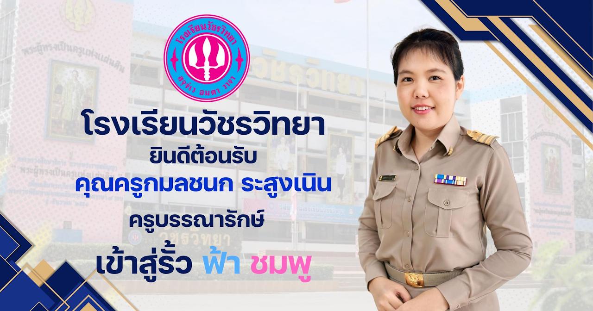
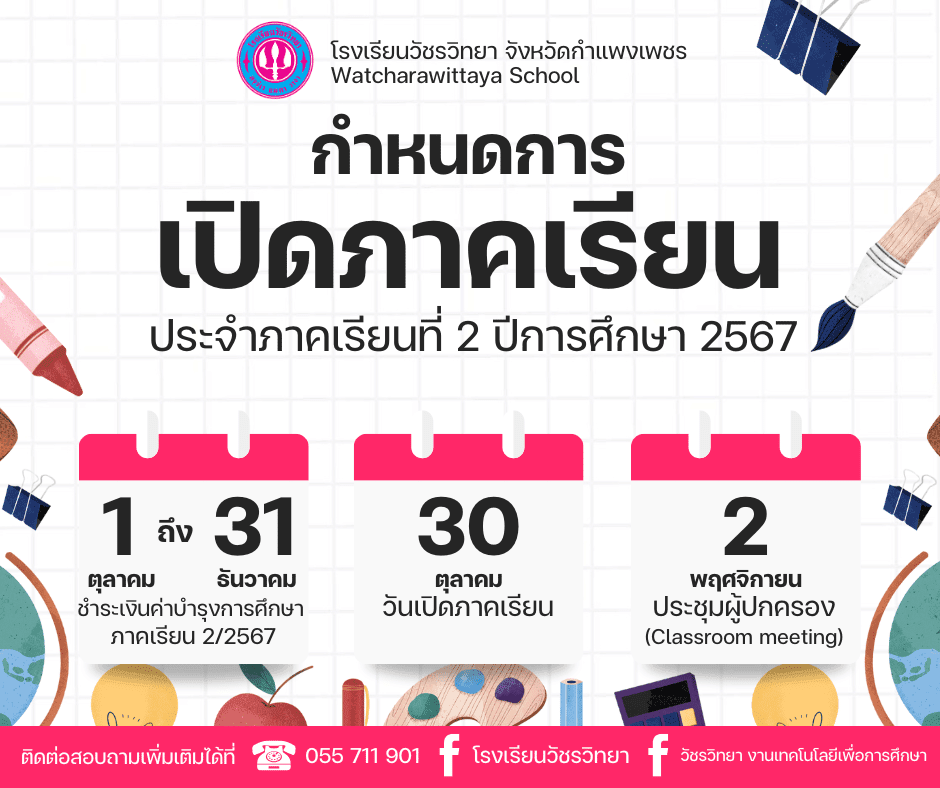
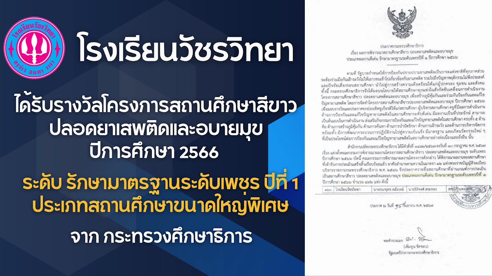

ผู้อำนวยการโรงเรียน
นายธนายุทธ คลังวงษ์
ผู้อำนวยการโรงเรียนวัชรวิทยา
บริการต่างๆ

ข่าวประชาสัมพันธ์

ยินดีต้อนรับคุณครูกมลชนก ระสูงเนิน
โรงเรียนวัชรวิทยายินดีต้อนรับคุณครูกมลชนก ระสูงเนิน เข้าสู่รั้ว ฟ้า-ชมพู

กำหนดการเปิดภาคเรียน
ประจำภาคเรียนที่ 2 ปีการศึกษา 2567

สถานศึกษาสีขาวปลอดยาเสพติดและอบายมุข
โรงเรียนวัชรวิทยาได้รับรางวัลสถานศึกษาสีขาวปลอดยาเสพติดและอบายมุข ปีการศึกษา 2566